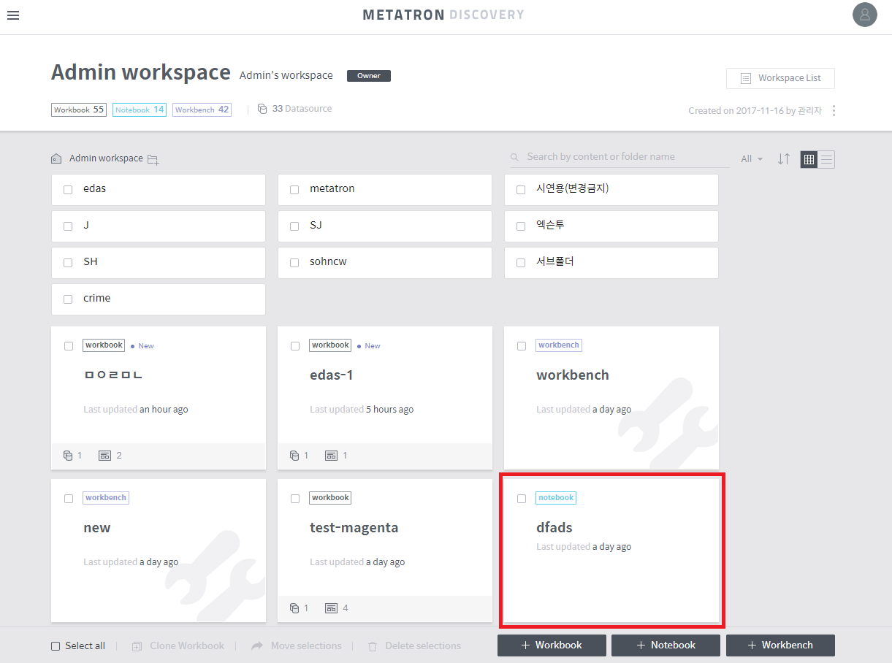

Creating a New Notebook¶
Once the notebook server has been set up, you can create a notebook. A notebook is created as follows:
Click the + Notebook button at the bottom of the workspace. You’ll be prompted to create a notebook.

Select the type of data set that you wish to analyze in the notebook. You can choose between Data source, the unit of data used in Metatron Discovery, Dashboard, Chart, and Not selected. If you want to use Zeppelin, select Not selected.

After selecting either “**Data Source**,” “**Dashboard**,” or “**Chart**,” you can see a list of data currently registered in Metatron Discovery. Select the data to analyze and click Next.

Enter the information about the notebook that you want to use as an analytics tool for data. The server type can only be selected for a notebook server connected during the initial notebook server setup. If Jupyter is selected, ‘R’ or ‘Python’ can be selected for analysis, whereas ‘Spark’ (Scala) is used when Zeppelin is selected.

Creating a new notebook - Summarizing and creating settings¶
Once a notebook has been created, you can check the following on the workspace screen.
